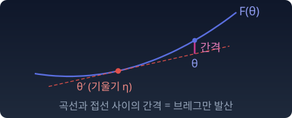

펜셸–영 부등식: F와 F*가 맞물리는 곳
“르장드르 변환은 짝이 맞는 두 값, 곧 η = F′(θ) 인 θ 와 η 를 전제로 만들었다. 짝이 맞지 않는 θ 와 η 를 아무렇게나 가져오면 F(θ) + F*(η) 와 θη 사이에는 무엇이 남는가?”
용수철 — 역학 속의 르장드르 변환
숫자로 먼저 보자. 예로 용수철에 매달린 공을 고른 까닭은 둘이다. 에너지가 속도의 이차식이라 원래 함수와 짝 함수를 모두 손으로 적을 수 있고, 물리학이 이미 이 변환을 날마다 쓰는 곳이기 때문이다. 질량 2 kg 인 공이 초속 1 m 로 움직이는 순간, 운동에너지는 ½ × 2 × 1² = 1 이고 운동량(질량 × 속도)은 2 다. 같은 운동에너지를 운동량으로 적으면 (운동량)² / (2 × 질량) = 4/4 = 1 이다. 둘을 더한 2 는 운동량 × 속도 = 2 와 딱 맞는다. 그런데 운동량 자리에 속도 1과 짝이 맞지 않는 3을 넣으면, 운동량으로 적은 쪽이 9/4 = 2.25 가 되어 합 3.25 가 운동량 × 속도 3 보다 0.25 크다. 짝이 맞으면 남는 것이 없고, 맞지 않으면 틈이 남는다.
위치에너지까지 넣어 이름을 붙이자. 라그랑지안 L 은 "속도로 쓴 에너지 장부"이고, 해밀토니안 ℋ 는 "운동량으로 쓴 에너지 장부"다. 위치 x 는 그대로 두고, 속도 v 에 대해서만 르장드르 변환을 한다.
기울기가 새 좌표가 되고(p = ∂L/∂v), 새 함수는 "기울기 × 변수 − 원래 함수"다. 르장드르 변환의 정의 F*(η) = sup(θη − F(θ)) 에서 sup 이 잡히는 점을 대입한 것과 똑같다.
실제 운동에서는 p를 언제나 mv로 정의하므로, 매 순간 L(v) + ℋ(p) = pv 가 성립한다. 그러나 이것은 p가 v에서의 기울기일 때만이다. p와 v를 따로 고르면 ½mv² + p²/2m ≥ pv 이고(산술–기하 평균), 등호는 p = mv 일 때뿐이다. 이 부등식이 일반 볼록함수에서 어떻게 생겼는지 아래에서 본다.
질량 m을 키우면 L = ½mv² 를 두 번 미분한 값 m이 커지고, ℋ = p²/2m 을 두 번 미분한 값 1/m은 작아진다. 원래 함수와 짝 함수의 두 번 미분한 값끼리의 관계 F″ · (F*)″ = 1 이 여기서 m · (1/m) = 1 이다.
파이썬
import numpy as np
m, k = 2.0, 8.0 # 질량, 용수철 상수
dt, steps = 1e-3, 3000
x, v = 1.0, 0.0
print(" t v p L+ℋ pv")
for n in range(steps + 1):
p = m * v # 운동량 = L 의 기울기
L = 0.5 * m * v**2 - 0.5 * k * x**2
H = p**2 / (2 * m) + 0.5 * k * x**2
if n % 750 == 0:
print(f"{n * dt:5.2f} {v:+.4f} {p:+.4f} {L + H:.4f} {p * v:.4f}")
v += -k / m * x * dt # 속도를 먼저 바꾸고 그 속도로 위치를 옮긴다(반암시적 오일러)
x += v * dt
v, p = 1.0, 3.0 # p 를 mv(=2) 와 다르게 고르면
print(f"p≠mv : L+ℋ−pv = {0.5 * m * v**2 + p**2 / (2 * m) - p * v:.4f} (> 0)")
# t v p L+ℋ pv
# 0.00 +0.0000 +0.0000 0.0000 0.0000
# 0.75 -1.9950 -3.9900 7.9600 7.9600
# 1.50 -0.2822 -0.5645 0.1593 0.1593
# 2.25 +1.9551 +3.9101 7.6445 7.6445
# 3.00 +0.5588 +1.1177 0.6246 0.6246
# p≠mv : L+ℋ−pv = 0.2500 (> 0)
펜셸–영 부등식 — 합은 언제나 θη 이상
“원본과 쌍대의 합은 언제나 θη 인가?”
아니다. 정의에서 바로 부등식이 나온다. F*(η)는 모든 θ에 대한 θη − F(θ) 중 가장 큰 값이다. 그러니 아무 θ를 하나 골라도 F*(η) ≥ θη − F(θ) 이다. 옮기면 끝이다.
이것을 펜셸–영 부등식이라 부른다. 등호는 sup이 바로 그 θ에서 잡힐 때, 곧 η = F′(θ) 일 때 성립한다. F가 미분할 수 없는 꺾인 점에서는 어떻게 되는지 아래 문제 6에서 따져 본다.
비유 — 퍼즐 조각
θ 조각과 η 조각을 아무렇게나 가져와 붙이면 틈이 생긴다: F + F* − θη > 0. η가 θ에서의 기울기일 때만 조각이 딱 맞물리고 틈이 0이 된다.
"한쪽이 커지면 다른 쪽이 작아지는 시소"로 생각하면 틀린다. F = θ²/2 이면 F* = η²/2 이고, 맞물린 짝 η = θ 에서 둘 다 θ²/2 다. 함께 커지고 함께 작아진다. 합이 θη로 고정되는 것은 맞물린 짝 위에서뿐이고, 그 θη도 θ를 따라 변한다.
틈의 크기는 그 자체로 쓸모가 있다. θ′ 을 η = F′(θ′) 인 점이라 하면, 틈은 F(θ) − F(θ′) − F′(θ′)(θ − θ′), 곧 θ′ 의 접선과 곡선 사이의 θ에서의 높이 차다. 그림의 「간격」이 바로 이것이다. 이 간격을 브레그만 발산이라 부른다.

불러오는 중…
파이썬
import numpy as np
pairs = {
"e^θ": (np.exp, np.exp, lambda e: e * np.log(e) - e, (0.01, 20)),
"log(1+e^θ)": (lambda t: np.log1p(np.exp(t)), lambda t: 1 / (1 + np.exp(-t)),
lambda e: e * np.log(e) + (1 - e) * np.log(1 - e), (0.001, 0.999)),
"θ²/2": (lambda t: t**2 / 2, lambda t: t, lambda e: e**2 / 2, (-5, 5)),
}
rng = np.random.default_rng(0)
for name, (F, dF, Fs, (lo, hi)) in pairs.items():
th, et = rng.uniform(-3, 3, 100_000), rng.uniform(lo, hi, 100_000)
gap = F(th) + Fs(et) - th * et # 아무 짝
t0 = rng.uniform(-3, 3, 5)
tight = np.abs(F(t0) + Fs(dF(t0)) - t0 * dF(t0)).max() # 맞물린 짝 η = F'(θ)
print(f"{name:11s} 아무 짝의 최소 틈 {gap.min():.1e} 맞물린 짝의 틈 {tight:.1e}")
# e^θ 아무 짝의 최소 틈 2.7e-08 맞물린 짝의 틈 5.6e-17
# log(1+e^θ) 아무 짝의 최소 틈 1.6e-10 맞물린 짝의 틈 2.2e-16
# θ²/2 아무 짝의 최소 틈 6.3e-10 맞물린 짝의 틈 0.0e+00
아무 짝에서는 틈이 음수로 내려가지 않고, 맞물린 짝에서는 부동소수점 오차 수준으로 0이다.
ML에서: 손실 함수는 틈이다
모델이 내놓은 값을 θ 자리에, 정답을 η 자리에 넣으면 펜셸–영 틈은 「정답과 맞물리지 않은 만큼」을 재는 손실이 된다. 정답과 짝이 맞으면 0 이고, 어긋날수록 커진다. F 를 무엇으로 고르느냐에 따라 이 틈이 회귀 모델의 제곱 오차가 되기도 하고, 분류 모델의 교차엔트로피가 되기도 한다. 두 경우는 아래 문제 7에서 직접 계산한다.
수확
“역학의 라그랑지안 → 해밀토니안도 르장드르 변환이다. L + ℋ = pv 는 p가 v에서의 기울기일 때만 성립하는 등식이다.”
“원본과 쌍대의 합은 언제나 θη 이상이다. 기울기로 맞물린 짝에서만 등호가 된다. 그 틈이 곧 발산이다.”
문제 6. 펜셸–영과 꺾인 점
(가) F(θ) = eᶿ 에서 θ = 1 로 고정하고, 틈 F(1) + F*(η) − η 를 η = 1, 2, e, 4 에서 계산하라. 틈이 가장 작은 곳은 어디이고, 그 값은 얼마인가? 틈이 0 보다 작아질 수 없음을 정의에서 보여라. 위의 펜셸–영 위젯에서 「문제 6 불러오기」를 누르고 η 슬라이더를 움직여 확인할 수 있다. (나) F(θ) = |θ| 의 F*를 구하고, 등호가 성립하는 (θ, η) 쌍을 모두 찾아라.
함께 풀기

F*(η) = η log η − η 는 η = 1 에서 −1 로 가장 작아요. 틈에서 F(1) = e 는 고정이니까, F* 가 가장 작은 η = 1 에서 틈도 가장 작겠죠.

η = 1 과 η = 2 에서 틈을 직접 계산해 볼래요?

η = 1 이면 e − 1 − 1 = 0.718, η = 2 면 e + 2 log 2 − 2 − 2 = 0.105 예요. 2 가 더 작아요. 틈에는 −θη 도 들어 있는데 F* 만 봤어요. η = e 에서는 e + (e − e) − e = 0 이고, η = 4 에서는 0.263 이에요.

e 는 θ = 1 에서의 기울기 e¹ 이잖아. 틈이 0 이 되는 곳이 기울기로 맞물린 η 야. 0 보다 작아질 수 없다는 증명은 한 줄이야. F*(η)는 sup이니까 어떤 θ를 넣은 θη − F(θ)보다도 크거나 같아. 그걸 옮기면 돼. 등호는 η = F′(θ) 일 때만이고.
(나)에서도 그래요?
|θ| 는 θ > 0 이면 기울기 1, θ < 0 이면 −1. F*(η) = sup(θη − |θ|) 는 |η| ≤ 1 이면 0, 넘으면 +∞ 예요. 등호는 θ > 0, η = 1 이거나 θ < 0, η = −1 이에요.
θ = 0 은요?
F′(0) 이 없으니까 등호가 안… 잠깐, F(0) + F*(η) = 0 + 0 = 0 이고 θη 도 0 이에요. |η| ≤ 1 이면 전부 등호예요.

꺾인 점에서는 그 점을 받치는 직선이 기울기 −1부터 1까지 전부라서, 맞물리는 η가 구간 하나 통째로예요. "η = F′(θ) 일 때만"은 미분 가능한 점에서만 맞는 말이었어요.
그 구간을 부분기울기(subgradient)라고 불러요. 편미분과는 상관없고, 받치는 직선의 기울기 모음이라는 뜻이에요. 매끄러운 점에서는 부분기울기가 보통 기울기 하나로 줄어들죠.
해석학에서 좌미분과 우미분이 다른 점이 생각나요. 그 사이의 기울기가 전부 "받치는 직선"이 되는 거네요.
문제 7. 제곱 오차와 교차엔트로피는 같은 틈인가
펜셸–영 틈 F(θ) + F*(η) − θη 의 θ 자리에 모델의 출력을, η 자리에 정답을 넣어 보자. (가) 회귀 모델: F(θ) = θ²/2 이면 F*(η) = η²/2 다. 예측 θ = 1.5, 정답 η = 2 에서 틈을 구하고 제곱 오차와 견주어라. (나) 이진 분류 모델: F(θ) = log(1 + eᶿ), F*(η) = η log η + (1 − η) log(1 − η) 다. 로짓 θ = 1, 정답 라벨 η = 1 에서 틈을 구하고, 모델이 정답에 준 확률의 −log 와 견주어라. (다) 라벨이 η = 1.2 처럼 0 과 1 밖에 있으면 틈은 어떻게 되는가?
함께 풀기
(가)는 1.125 + 2 − 3 = 0.125 예요. (2 − 1.5)² / 2 도 0.125 니까 제곱 오차의 절반이에요. (나)는 F*(1) 에 log 0 이 들어가서 −∞ 예요. 그럼 틈도 −∞ 인데요.
펜셸–영 틈이 음수가 될 수 있었나요?

아뇨, 0 이상이라고 했는데… 식은 맞게 넣었어요.
0 × log 0 이 문제야. η log η 는 η 가 0 에 다가가면 0 으로 가니까, (1 − η) log(1 − η) 는 η = 1 에서 0 이야. F*(1) = 1 × log 1 + 0 = 0.

그럼 틈은 log(1 + e) − 1 = 0.3133 이에요. 모델이 정답에 준 확률은 시그모이드 1/(1 + e⁻¹) = 0.7311 이고 −log 0.7311 = 0.3133. 교차엔트로피 손실과 똑같아요.
회귀의 제곱 오차와 분류의 교차엔트로피가 같은 틀에서 나왔어요. 바뀐 것은 F 하나예요. (다)는요?

F*(1.2) = sup(1.2θ − log(1 + eᶿ)) 인데, θ 가 커지면 log(1 + eᶿ) 는 거의 θ 라서 0.2θ 가 끝없이 커져요. F*(1.2) = +∞ 이고 틈도 +∞ 예요. F* 의 정의역 [0, 1] 이 곧 라벨이 살 수 있는 곳이네요. 확률이 아닌 라벨을 넣으면 교차엔트로피는 값이 없어요.
조교가 100점 만점 과제에 120점을 입력했더니 성적 스크립트가 멈춘 적이 있어요. 스크립트가 받을 수 있는 범위부터 정해져 있던 거네요.
문제 8. 오목한 굴곡을 가진 함수 (킬러)
F(θ) = θ⁴ − 2θ² 는 볼록이 아니다(|θ| < 1/√3 에서 F″ < 0). (가) F*(0) 과, 그 sup이 잡히는 θ를 모두 구하라. (나) F**(θ) = (F*)*(θ) 를 수치로 구해 F와 비교하라. 어디서 다르고, F**는 어떤 함수인가? (다) 이것을 속도 v의 라그랑지안 L(v) = v⁴ − 2v² 라고 하자. v = 0.5 에서 p = L′(v) 로 두면 L(v) + ℋ(p) = pv 가 성립하는가? 어떤 속도에서 이 등식이 성립할 수 있는가?
함께 풀기
(가)부터요.
F*(0) = sup(−θ⁴ + 2θ²) 예요. 미분하면 −4θ³ + 4θ = 0, θ = 0, ±1. θ = ±1 에서 1 이니까 F*(0) = 1, 잡히는 점은 두 개예요.
기울기 0인 받침 직선이 곡선에 두 군데서 닿는다는 거예요. 볼록함수에서 그런 일이 있었어요?
엄격 볼록이면 한 기울기에 한 점이었어요. 여기선 일대일이 깨졌어요.

(나)는 돌려 봤는데 버그가 있어요. F*를 격자로 구하고 그걸 다시 변환했는데, θ = 0 에서 F**가 −1 이 나와요. F(0) 은 0 인데요. θ = 0.5 에서도 F는 −0.4375 인데 F**는 −1 이에요.
θ = 1.5 와 2 는요?
거기선 0.5625, 8.0 으로 똑같아요. 틀린 건 |θ| < 1 에서만이에요. 격자 문제인가 싶어서 촘촘하게 해도 −1 이 그대로예요.
구간 [−1, 1] 에서 F**는 어떤 모양이에요?
전부 −1 이에요. 평평해요.
F(±1) = −1 이에요. 두 점을 줄로 이으면요?

높이 −1 인 수평선이요. F**는 가운데 솟은 혹을 그 줄로 덮어 버린 거예요. 버그가 아니라, 두 번 변환하면 원래 함수가 아니라 아래에서 받치는 가장 큰 볼록함수가 나오는 거네요.
볼록포라고 불러요. 접선의 모음은 볼록한 부분만 기억할 수 있어요. 혹 부분에는 곡선 아래에서 닿는 직선이 없으니까요.
조별 보고서를 요약본만 보고 다시 쓰면, 요약에 안 들어간 곁가지는 사라지는 것 같아요. 요약이 기억하는 것만 돌아와요.
서연 학생, (다)요.
p = L′(0.5) = 4(0.125) − 2 = −1.5 예요. ℋ(−1.5) = sup(−1.5v − v⁴ + 2v²) 를 구하면 2.621 이고, v ≈ −1.151 에서 잡혀요. L(0.5) = −0.4375, pv = −0.75 니까 L + ℋ − pv = −0.4375 + 2.621 + 0.75 = 2.934 예요. 0이 아니에요.

그런데 이상해요. 용수철에서는 L + ℋ = pv 가 매 순간 성립한다고 했잖아요. 운동하는 공은 v = 0.5 를 지날 수 있는데, 그 순간에는 등식이 깨지는 건가요? 물리가 깨지는 건 아니잖아요.
용수철에서 등식이 성립한 이유가 뭐였죠?
p = mv 가 v에서의 기울기이고, ½mv² 가 볼록이라 그 기울기에서 sup이 v 한 점에서 잡혔기 때문이에요.
여기서 p = −1.5 가 되는 v는 몇 개예요?
4v³ − 4v = −1.5 를 풀면… −1.151, 0.5, 0.651 세 개요. 그중 sup이 잡히는 건 −1.151 뿐이에요.

운동량 −1.5 하나에 속도가 셋이에요. 해밀토니안은 운동량만 보고 에너지를 적는 장부인데, 그 장부에는 −1.151 만 기록되고 0.5 와 0.651 은 적힐 자리가 없어요. 물리가 깨진 게 아니라, 이 라그랑지안은 운동량의 언어로 번역이 안 되는 거예요. 등식이 성립하는 속도는 L 이 볼록포와 겹치는 곳, |v| ≥ 1 뿐이에요.

그래서 역학에서는 라그랑지안이 속도에 대해 볼록해야 운동량 장부(해밀턴 형식)로 탈 없이 넘어갈 수 있다고 봐요. 변분법에서는 라그랑지안을 속도로 두 번 미분한 값이 0 이상이어야 한다는 같은 뿌리의 조건을 르장드르 조건(르장드르–클렙시 조건)이라고 불러요. 오늘 두 사람이 다른 문으로 같은 방에 들어왔어요. 민준 학생은 F**가 볼록포라는 걸 숫자로, 서연 학생은 그 볼록포 밖의 속도가 운동량 장부에서 사라진다는 걸 물리로요.
선형대수에서 역행렬이 없는 행렬을 만나면 "정보가 사라지는 방향"을 찾으라고 배웠어요. 여기서는 오목한 굴곡이 그 방향이에요.